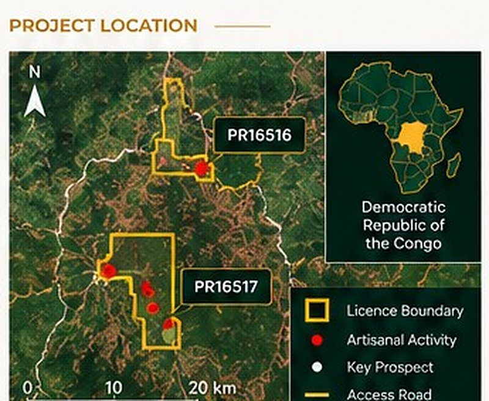
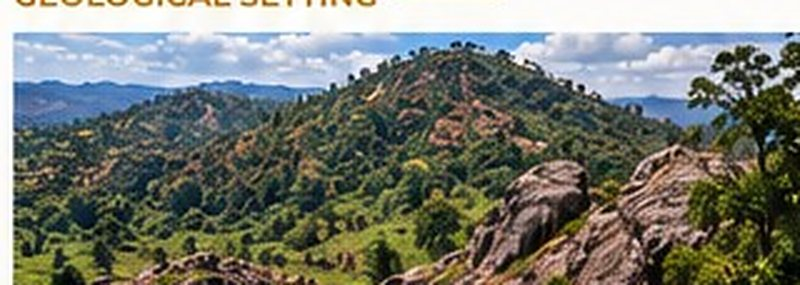
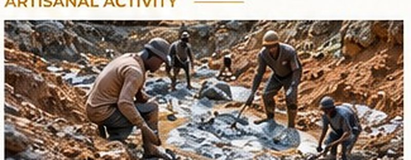
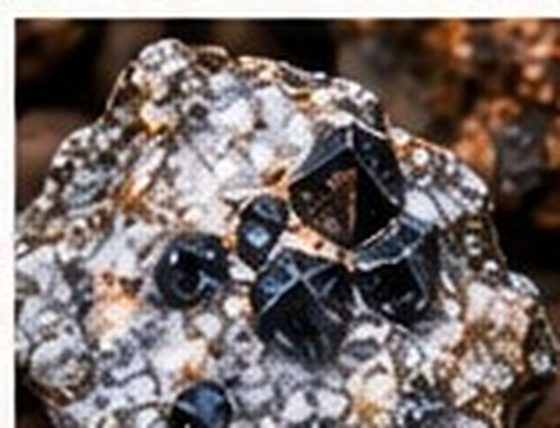
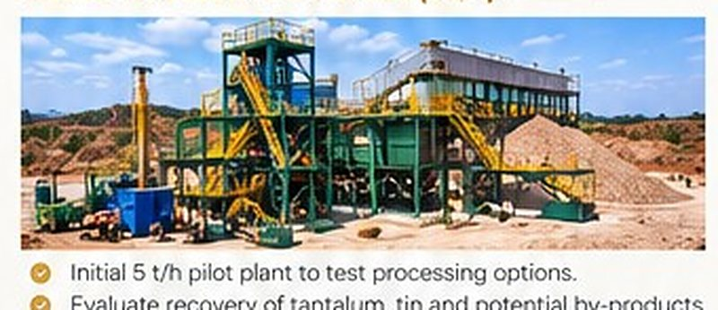

Project overview
Alpha Tantalum comprises two exploration licences (PR16516 and PR16517) in the Democratic Republic of the Congo, prospective for tantalum (tantalite) and tin (cassiterite), with encouraging surface samples and artisanal activity.
The project also has potential for associated critical minerals, including rare earth elements.
Guilgal International, through Alpha Tantalum SARL, is advancing technical studies, exploration and development options in partnership with local stakeholders.
Key highlights
- Two exploration licences (PR16516 & PR16517)
- Tantalum and tin mineralisation with strong surface samples
- Artisanal mining activity
- Potential for associated critical minerals (REE, Rb)
- Pathway from exploration to pilot processing and scale-up
- Support from local partners and financial institutions
Project location

Geological setting

- Located within a prospective tin-tantalum belt.
- Pegmatites and associated granitic intrusions.
- Evidence of tantalum, tin and associated critical minerals.
- Accessible by existing regional infrastructure.
Artisanal activity

- Active artisanal mining for tantalite and cassiterite.
- Confirms mineralisation at surface.
- Provides valuable local knowledge and target indicators.
- Supports early-stage bulk sampling and pilot processing.



Development pathway
- Complete detailed geological mapping and sampling
- Geophysical surveys to refine targets
- Drilling programme to test key targets
- Preliminary mineral inventory and scoping study
- Pilot processing and metallurgical test work
- Development study and financing options
Partnership opportunity
Alpha offers exposure to tantalum, tin and potential rare earth elements, with a pathway to pilot processing and scale-up. We welcome strategic partners and funding institutions.